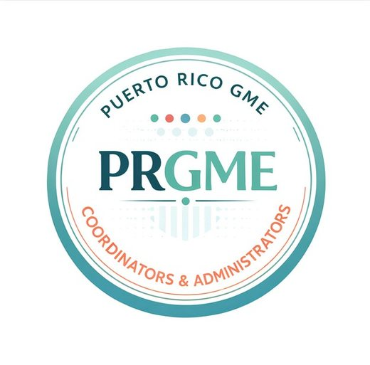

Brief ReportA4
Building a Collaborative Network for GME Coordinators in Puerto Rico: A Social Media-Based Approach
Mayaguez Medical Center, Family Medicine Residency Program, Puerto Rico
- Article type
- Brief Report
- Published
- August 2026
- DOI
10.70785/ZMUQ2206- Access
- Peer reviewed, open access
Abstract
- Background
- Graduate Medical Education (GME) coordinators play an essential role in residency program administration, yet opportunities for collaboration and professional development can be limited, particularly in geographically isolated regions.
- Objective
- To describe the development and early engagement of a social media-based network for GME coordinators and administrators in Puerto Rico.
- Methods
- This brief report describes the development of the PR GME Coordinators & Administrators Facebook group, a social media-based initiative designed to encourage networking, resource sharing, and peer support among GME professionals across Puerto Rico.
- Results
- Early engagement demonstrates the feasibility of using an accessible digital platform to build a collaborative community of practice, promote professional development, and strengthen administrative consistency across institutions.
- Conclusions
- This scalable, low-cost model offers a practical approach that may be adapted to support GME coordinators in other resource-limited or geographically dispersed settings.
Graduate Medical Education (GME) coordinators play a critical role in supporting residency programs; however, opportunities for structured collaboration and professional development among coordinators in Puerto Rico have been limited.
To address the need for collaboration and professional development, a social media-based initiative was developed through the creation of the PR GME Coordinators & Administrators Facebook group.
This group was designed as an accessible and centralized platform for GME coordinators and administrators across Puerto Rico.

The primary objectives of the group included:
- Facilitating peer-to-peer discussions
- Sharing educational resources and best practices
- Promoting professional development opportunities and events
- Encouraging collaboration across institutions
The platform was selected due to its accessibility, familiarity among users, and ability to support real-time communication and content sharing. This initiative was independently developed and implemented, demonstrating the potential for individual leadership to advance innovation in GME administration.
Within the first three months, the group has grown to include over 25 members representing multiple institutions across Puerto Rico.
Engagement within the group has included:
- Active discussions among members
- Sharing of educational resources
- Promotion of professional development events
This report describes an early-stage, social media-based approach to addressing a recognized gap in collaboration and professional development among GME coordinators in Puerto Rico. By using an accessible digital platform, this initiative shows how low-cost, scalable solutions can support meaningful professional engagement.
This initiative extends beyond a communication tool by building a structured community of practice tailored to the specific needs of GME coordinators. By strengthening collaboration and administrative practices, it has the potential to indirectly enhance the quality and consistency of GME program operations.
Despite its early stage, this initiative highlights the feasibility of implementing innovative solutions with minimal resources. While formal outcome measures are not yet available, future efforts will focus on incorporating structured evaluation methods, including participant feedback and engagement metrics.
Future directions include the development of structured educational programming such as workshops, webinars, and local conferences in Puerto Rico aimed at further advancing the professional development of GME coordinators and administrators.
Although this report reflects a single-region initiative, this model may be particularly valuable in geographically or resource-limited settings and can be adapted to similar contexts.
Conflict of interest. The author(s) declares no conflict of interest.
How to cite this article
Morales C. Building a Collaborative Network for GME Coordinators in Puerto Rico: A Social Media-Based Approach. FULGME. 2026;(3):A4. DOI: 10.70785/ZMUQ2206
Article Information
- Journal
- FULGME: Forum for United Leaders in Graduate Medical Education
- Publisher
- Forum for United Leaders in Graduate Medical Education
- ISSN
- 3065-582x
- Issue
- 3, August 2026
- Article number
- A4
- Article DOI
- 10.70785/ZMUQ2206
- Issue DOI
- 10.70785/JJXN8215
- Journal DOI
- 10.70785/IHSN6820
- Access
- Peer reviewed, open access, free to read
- Copyright
- Retained by the author(s)
- Licence
- CC BY-NC-ND 4.0
- Contact
- info@fulgme.org
Copyright and licence. © The author(s). This article is published open access under a Creative Commons Attribution-NonCommercial-NoDerivatives 4.0 International licence (CC BY-NC-ND 4.0). You are free to copy and redistribute it in any medium or format, with attribution to the author(s) and FULGME, provided you do not use it commercially and do not distribute altered versions.